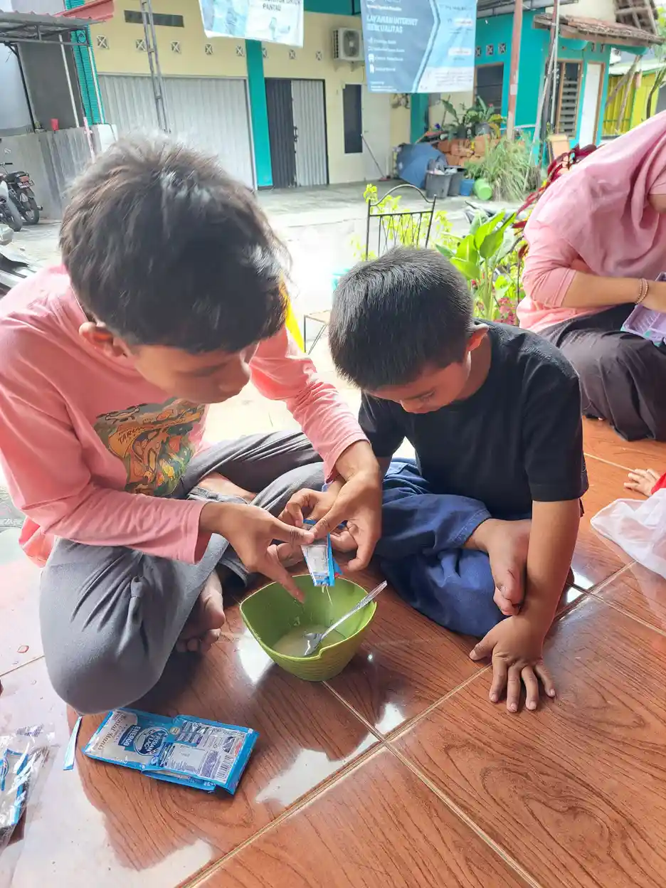

Permainan motorik halus adalah aktivitas bermain yang melatih gerak kecil tangan dan jari, koordinasi mata, ketepatan, serta kemandirian tanpa mengubah rumah menjadi ruang ujian.
Ide terbaik adalah permainan yang bisa diulang dan disesuaikan. Mulailah dengan bahan besar dan tujuan sederhana, kemudian tambahkan tantangan bila anak siap. Orang tua dapat bermain bersama, tetapi biarkan anak memegang kendali sebanyak mungkin.
Daftar Isi
Permainan memindahkan benda
Permainan memindahkan benda perlu dipahami sebagai proses yang bertahap, bukan target yang harus dicapai dalam satu minggu. Memindahkan benda dari satu wadah ke wadah lain adalah permainan awal yang mudah. Gunakan balok besar, bola kain, atau spons agar anak melatih meraih dan melepas. Orang tua dapat memulai dari kebutuhan nyata anak, mengamati responsnya, lalu memilih satu perubahan kecil yang bisa dilakukan konsisten. Cara ini membantu keluarga membedakan antara informasi umum dan keputusan yang memang cocok untuk kondisi anak.
Dalam praktik sehari-hari, Buat dua keranjang berwarna berbeda dan minta anak memilih urutan sendiri. Buat catatan sederhana tentang tanggal, durasi, bantuan yang diberikan, dan apa yang membuat anak nyaman. Catatan tersebut lebih berguna daripada membandingkan anak dengan saudara atau unggahan media sosial, karena setiap anak memiliki pengalaman, kesempatan latihan, dan cara berkomunikasi yang berbeda.
Bagi keluarga yang mendampingi anak berkebutuhan khusus, Pastikan ukuran bahan lebih besar dari risiko tertelan dan dampingi sepanjang permainan. Beri pilihan, gunakan instruksi singkat, dan berhenti ketika anak menunjukkan tanda lelah atau kewalahan. Bila ada kekhawatiran yang menetap, bawa catatan tersebut kepada guru, dokter, psikolog, atau terapis yang kompeten untuk mendapatkan penilaian yang lebih menyeluruh.
Permainan menjepit dan memasang
Permainan menjepit perlu dipahami sebagai proses yang bertahap, bukan target yang harus dicapai dalam satu minggu. Penjepit besar, klip pakaian, dan papan dengan lubang dapat melatih kekuatan jari. Tantangan dapat ditambah dengan warna atau pola sederhana. Orang tua dapat memulai dari kebutuhan nyata anak, mengamati responsnya, lalu memilih satu perubahan kecil yang bisa dilakukan konsisten. Cara ini membantu keluarga membedakan antara informasi umum dan keputusan yang memang cocok untuk kondisi anak.
Dalam praktik sehari-hari, Tempel kartu warna pada wadah dan minta anak memasang klip yang sesuai. Buat catatan sederhana tentang tanggal, durasi, bantuan yang diberikan, dan apa yang membuat anak nyaman. Catatan tersebut lebih berguna daripada membandingkan anak dengan saudara atau unggahan media sosial, karena setiap anak memiliki pengalaman, kesempatan latihan, dan cara berkomunikasi yang berbeda.
Bagi keluarga yang mendampingi anak berkebutuhan khusus, Jika tangan cepat lelah, kurangi jumlah klip dan beri jeda gerak. Beri pilihan, gunakan instruksi singkat, dan berhenti ketika anak menunjukkan tanda lelah atau kewalahan. Bila ada kekhawatiran yang menetap, bawa catatan tersebut kepada guru, dokter, psikolog, atau terapis yang kompeten untuk mendapatkan penilaian yang lebih menyeluruh.

Permainan sobek dan tempel
Permainan seni motorik halus perlu dipahami sebagai proses yang bertahap, bukan target yang harus dicapai dalam satu minggu. Sobek-tempel, stiker, dan kolase memberi latihan koordinasi dua tangan. Anak memegang kertas dengan satu tangan sambil menggerakkan tangan lain. Orang tua dapat memulai dari kebutuhan nyata anak, mengamati responsnya, lalu memilih satu perubahan kecil yang bisa dilakukan konsisten. Cara ini membantu keluarga membedakan antara informasi umum dan keputusan yang memang cocok untuk kondisi anak.
Dalam praktik sehari-hari, Gunakan tema yang disukai anak, seperti makanan, kendaraan, atau hewan. Buat catatan sederhana tentang tanggal, durasi, bantuan yang diberikan, dan apa yang membuat anak nyaman. Catatan tersebut lebih berguna daripada membandingkan anak dengan saudara atau unggahan media sosial, karena setiap anak memiliki pengalaman, kesempatan latihan, dan cara berkomunikasi yang berbeda.
Bagi keluarga yang mendampingi anak berkebutuhan khusus, Gunakan lem aman, kertas tidak berlapis tajam, dan bantu bila anak sensitif terhadap tekstur. Beri pilihan, gunakan instruksi singkat, dan berhenti ketika anak menunjukkan tanda lelah atau kewalahan. Bila ada kekhawatiran yang menetap, bawa catatan tersebut kepada guru, dokter, psikolog, atau terapis yang kompeten untuk mendapatkan penilaian yang lebih menyeluruh.
Permainan meronce dan menyusun
Permainan meronce perlu dipahami sebagai proses yang bertahap, bukan target yang harus dicapai dalam satu minggu. Meronce ukuran besar, menyusun balok, dan memasukkan bentuk mengajarkan urutan serta ketepatan. Bahan dapat diganti untuk menyesuaikan kemampuan. Orang tua dapat memulai dari kebutuhan nyata anak, mengamati responsnya, lalu memilih satu perubahan kecil yang bisa dilakukan konsisten. Cara ini membantu keluarga membedakan antara informasi umum dan keputusan yang memang cocok untuk kondisi anak.
Dalam praktik sehari-hari, Mulai dengan tiga benda dan pola bebas, kemudian beri contoh urutan dua warna. Buat catatan sederhana tentang tanggal, durasi, bantuan yang diberikan, dan apa yang membuat anak nyaman. Catatan tersebut lebih berguna daripada membandingkan anak dengan saudara atau unggahan media sosial, karena setiap anak memiliki pengalaman, kesempatan latihan, dan cara berkomunikasi yang berbeda.
Bagi keluarga yang mendampingi anak berkebutuhan khusus, Meronce membutuhkan pengawasan dekat karena banyak bahan berukuran kecil. Beri pilihan, gunakan instruksi singkat, dan berhenti ketika anak menunjukkan tanda lelah atau kewalahan. Bila ada kekhawatiran yang menetap, bawa catatan tersebut kepada guru, dokter, psikolog, atau terapis yang kompeten untuk mendapatkan penilaian yang lebih menyeluruh.

Permainan pramenulis
Permainan pramenulis perlu dipahami sebagai proses yang bertahap, bukan target yang harus dicapai dalam satu minggu. Menggambar dengan krayon besar, membuat garis di pasir bersih, dan mengecat dengan kuas air melatih kontrol tanpa tekanan menulis rapi. Orang tua dapat memulai dari kebutuhan nyata anak, mengamati responsnya, lalu memilih satu perubahan kecil yang bisa dilakukan konsisten. Cara ini membantu keluarga membedakan antara informasi umum dan keputusan yang memang cocok untuk kondisi anak.
Dalam praktik sehari-hari, Sediakan permukaan vertikal atau kertas besar agar gerakan bahu dan tangan lebih bebas. Buat catatan sederhana tentang tanggal, durasi, bantuan yang diberikan, dan apa yang membuat anak nyaman. Catatan tersebut lebih berguna daripada membandingkan anak dengan saudara atau unggahan media sosial, karena setiap anak memiliki pengalaman, kesempatan latihan, dan cara berkomunikasi yang berbeda.
Bagi keluarga yang mendampingi anak berkebutuhan khusus, Jangan mengoreksi setiap garis; fokus pada kenyamanan dan kesempatan mencoba. Beri pilihan, gunakan instruksi singkat, dan berhenti ketika anak menunjukkan tanda lelah atau kewalahan. Bila ada kekhawatiran yang menetap, bawa catatan tersebut kepada guru, dokter, psikolog, atau terapis yang kompeten untuk mendapatkan penilaian yang lebih menyeluruh.
Checklist praktik
- Pilih tiga permainan sesuai usia dan minat.
- Siapkan alas dan wadah agar bahan tidak tercecer.
- Tunjukkan contoh satu kali.
- Tunggu anak mencoba sebelum membantu.
- Naikkan tantangan satu langkah.
- Simpan bahan kecil di luar jangkauan balita.
Permainan bantu kemandirian
Permainan kemandirian perlu dipahami sebagai proses yang bertahap, bukan target yang harus dicapai dalam satu minggu. Papan kancing, membuka resleting, menuang, dan melipat kain menghubungkan motorik halus dengan aktivitas sehari-hari. Anak belajar karena tugasnya bermakna. Orang tua dapat memulai dari kebutuhan nyata anak, mengamati responsnya, lalu memilih satu perubahan kecil yang bisa dilakukan konsisten. Cara ini membantu keluarga membedakan antara informasi umum dan keputusan yang memang cocok untuk kondisi anak.
Dalam praktik sehari-hari, Latih satu langkah dari rutinitas asli, misalnya menarik resleting setelah orang tua memasukkan kepala resleting. Buat catatan sederhana tentang tanggal, durasi, bantuan yang diberikan, dan apa yang membuat anak nyaman. Catatan tersebut lebih berguna daripada membandingkan anak dengan saudara atau unggahan media sosial, karena setiap anak memiliki pengalaman, kesempatan latihan, dan cara berkomunikasi yang berbeda.
Bagi keluarga yang mendampingi anak berkebutuhan khusus, Hindari benda panas, tajam, atau cairan pembersih dalam permainan rumah. Beri pilihan, gunakan instruksi singkat, dan berhenti ketika anak menunjukkan tanda lelah atau kewalahan. Bila ada kekhawatiran yang menetap, bawa catatan tersebut kepada guru, dokter, psikolog, atau terapis yang kompeten untuk mendapatkan penilaian yang lebih menyeluruh.

Memilih tingkat tantangan
Tingkat tantangan permainan perlu dipahami sebagai proses yang bertahap, bukan target yang harus dicapai dalam satu minggu. Permainan yang tepat terasa menantang tetapi masih mungkin diselesaikan. Jika anak selalu gagal atau selalu bosan, ubah ukuran, jumlah, posisi, atau aturan. Orang tua dapat memulai dari kebutuhan nyata anak, mengamati responsnya, lalu memilih satu perubahan kecil yang bisa dilakukan konsisten. Cara ini membantu keluarga membedakan antara informasi umum dan keputusan yang memang cocok untuk kondisi anak.
Dalam praktik sehari-hari, Pakai prinsip satu perubahan: pertahankan semua hal lalu ubah hanya satu unsur. Buat catatan sederhana tentang tanggal, durasi, bantuan yang diberikan, dan apa yang membuat anak nyaman. Catatan tersebut lebih berguna daripada membandingkan anak dengan saudara atau unggahan media sosial, karena setiap anak memiliki pengalaman, kesempatan latihan, dan cara berkomunikasi yang berbeda.
Bagi keluarga yang mendampingi anak berkebutuhan khusus, Kinerja anak dapat turun ketika lapar, sakit, atau lelah; pilih waktu yang lebih sesuai. Beri pilihan, gunakan instruksi singkat, dan berhenti ketika anak menunjukkan tanda lelah atau kewalahan. Bila ada kekhawatiran yang menetap, bawa catatan tersebut kepada guru, dokter, psikolog, atau terapis yang kompeten untuk mendapatkan penilaian yang lebih menyeluruh.
| Rentang usia | Contoh yang dapat diamati | Aktivitas rumah |
|---|---|---|
| 0–12 bulan | Meraih, memindahkan benda, berguling, duduk, atau berpindah sesuai kesiapan | Permainan lantai dengan benda aman, meraih dari dua arah, tummy time sesuai anjuran |
| 1–2 tahun | Berjalan, membawa benda, menyusun, mencoret, dan mencoba naik-turun dengan bantuan | Memindah balok besar, menuang dengan wadah, berjalan mengikuti garis |
| 2–5 tahun | Melompat, berlari, menggunting, menggambar, dan meronce secara bertahap | Lempar tangkap besar, sobek-tempel, meronce ukuran besar, permainan keseimbangan |
| 5 tahun ke atas | Koordinasi lebih kompleks, ketepatan, daya tahan, dan kemandirian tugas | Melipat, menulis, olahraga terstruktur, memasak sederhana, dan proyek seni |
Rujukan milestone: NHS Start for Life (halaman perkembangan anak, diakses 2026), WHO Motor Development Study (2006), dan UNICEF Parenting (halaman milestone perkembangan). Tabel ini untuk ide observasi, bukan alat diagnosis.
Pertanyaan yang Sering Diajukan
Apa yang perlu diketahui tentang permainan motorik halus?
Gunakan panduan ini sebagai titik awal, sesuaikan dengan usia, kebutuhan, minat, dan kondisi anak. Bila ada kekhawatiran yang menetap, diskusikan dengan profesional.
Apakah panduan permainan motorik halus bisa menggantikan pemeriksaan?
Tidak. Artikel ini bersifat edukasi dan tidak menggantikan evaluasi, diagnosis, atau rekomendasi individual.
Bagaimana memulai permainan motorik halus di rumah?
Mulai dari satu tujuan kecil, siapkan bahan aman, beri contoh singkat, dan catat respons anak tanpa memaksa.
Sumber dan cara membaca data
Gunakan sumber primer sebagai bahan diskusi, bukan pengganti asesmen atau keputusan keluarga. Tautan yang dipakai dalam artikel ini:
Baca Juga
Penutup: Informasi yang baik membantu keluarga mengambil langkah kecil yang realistis. Pilih satu aktivitas, dokumentasikan respons anak, dan evaluasi bersama tenaga yang tepat bila diperlukan.